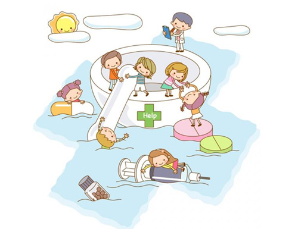
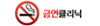
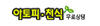
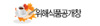

메뉴 건너 뛰기
로그인
마이페이지
회원가입
네이게이션
보건소소개
소장인사말
조직구성
업무소개
전화번호안내
찾아오시는길
민원안내
민원처리안내
허가신고안내
검사안내
서식다운로드
진료안내
일반진료
한방진료
구강진료
임상병리검사
물리치료
x선검사
건강검진
사업안내
감영병관리
방역소득
건강증진
보건교육
모자보건
열린보건소
건강검진
예방접종
영유아예방접종
예방접종
예방접종비용
예방접종도우미
식품위생
식품위생엽업
식중독예방
모법업소 안내
원산지표시
정보광장
영양정보
운동정보
금연 절주정보
식품안전정보
해외건강정보
AIDS
결핵
진료검색
진료검색
검색
진료설명
국가필수예방접종은 어떻게 하면 접종받을 수 있나요? “ 예방접종 표준일정에 맞춰 무료 적기접종하세요” “ 예방접종 표준일정에 맞춰 적기접종하세요 ” 예방접종 표준일정은 아이의 면역을 형성하는 데 가장 효율적인 기간을 표준으로 정한 것으로 적기에 예방접종을 실시하는 것이 매우 중요합니다.
> 온라인민원
> 결과조회
> 외국인진료
> 송파구 모기지도
> 외국인 조제약국
> 야간 및 공휴일
> 협조요청
> 웹기반손상감시
> 부조리신고
> 민원서식다운로드
> 민원불편신고
> 응급의료정보센터
> 휴일당번약국
> 정보공개창
> 안전도시사업
> 심폐소생술
12월호
민원처리안내
민원
처리
안내
건강진단서 및 건강진단결과서
민원안내 빨라집니다.
바로가기
슬라이드배너
1
2
3

일반진료
장애인 1·2·3급 송파구민, 65세 이상 서울시민, 국가유공자, 5.18민주유공자, 특수임무유공자, 의사상자와 그 유족, 병역명문가 예우대상자
한방진료
국민건강보험증 또는 의료급여증,보험에 해당하지 않는 첩약 처방, 조제는 진료내용 범위에 포함되지 않음
보건소 쿠폰
보건소진료의 특별기획 쿠폰
바로가기
의료비지원
위암,유방암,간암,자궁경부암,대장암
바로가기
노인건강증진사업,결핵,국가필수예방접종
노인건강증진사업
치매예방, 조기발견, 재활 등 진행 단계별 적정 관리를 체계적이고 지속적으로 제공함으로써 치매 유병율을 감소시키고, 중증 치매를 예방하여 본인 및 가족의 사회적 부담 함
결핵
만성 전염병인 결핵을 조기에 발견 치료하여 환자 본인의 건강은 물론 가족과 주민의 건강을 보호하기 위함.
국가필수예방접종
예방접종 표준일정은 아이의 면역을 형성하는 데 가장 효율적인 기간을 표준으로 정한 것으로적기에 예방접종을 실시하는 것이 매우 중요합니다.
송파구지방시간선택제임기제 공무원 계획공고
송파구보건지소 영양사기간제근로자 모집
송파구보건지소 영양사기간제근로자 모집
겨울철 식중독 노로바이러스예방 요령입니다
국가결핵관리사업 기간제근로자 채용 공고
송파구 소재 산후조리원 이용요금 알림입니다
관련업체바로가기


